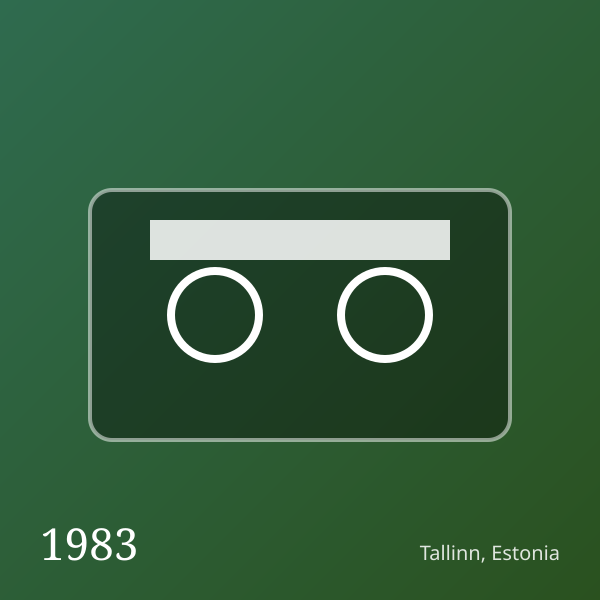

Thirty songs left in the radio archive

In Soviet Estonia, the Estonian Radio studios were almost the only place a musician could record. Velly Joonas recorded about thirty songs there, and nearly all of them stayed in the archive.
One that escaped, decades later, is "Stopp, seisku aeg!" ("Stop! Stall the time!"). She wrote an Estonian lyric to a Frida song and sang it over an amateur band of young Russians from the Lasnamäe district. The Tallinn label Frotee put it out on a 7" in 2015, and has since dug more buried tracks out of the radio archive.